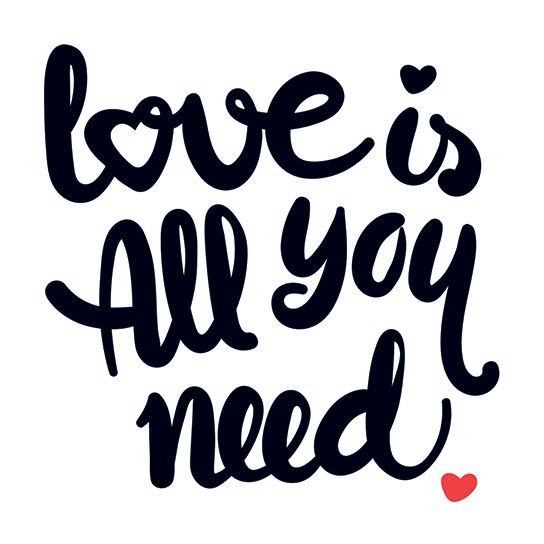

The holiday has origins in the Roman festival of Lupercalia, held in mid-February. ... At the end of the 5th century, Pope Gelasius I replaced Lupercalia with St. Valentine's Day. It came to be celebrated as a day of romance from about the 14th century. Formal messages, or valentines, appeared in the 1500s, and by the late 1700s commercially printed cards were being used. The first commercial valentines in the United States were printed in the mid-1800s. Valentines commonly depict Cupid, the Roman god of love, along with hearts, traditionally the seat of emotion.
58 million pounds of chocolate will be purchased during the week of Valentine's Day. 36 million number of heart-shaped boxes of chocolate purchased for Valentine's Day. 8 billion Sweathearts are produced annually and the majority of them are sold between Jan 1 and Feb 14.
An unofficial holiday celebrated on February 13th, click below to find out more!